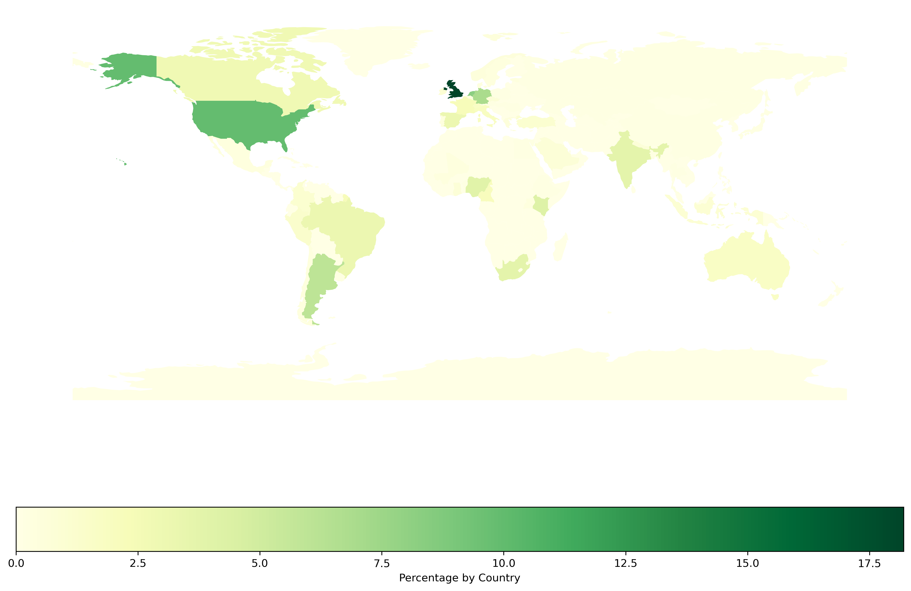

Community location#
This page shows the location (by continent or country) of the OLS community members, given their different roles
import geopandas
import matplotlib.pyplot as plt
import pandas as pd
from pathlib import Path
path = geopandas.datasets.get_path('naturalearth_lowres')
world_df = geopandas.read_file(path)
url = 'https://raw.githubusercontent.com/open-life-science/open-life-science.github.io/main/_data/artifacts/people.csv'
people_df = pd.read_csv(url, index_col=0)
/tmp/ipykernel_2009/1319868172.py:1: FutureWarning: The geopandas.dataset module is deprecated and will be removed in GeoPandas 1.0. You can get the original 'naturalearth_lowres' data from https://www.naturalearthdata.com/downloads/110m-cultural-vectors/.
path = geopandas.datasets.get_path('naturalearth_lowres')
Number of people
len(people_df)
576
Continents#
Proportion of people without continent information
people_df.continent.isna().sum() / len(people_df.continent)
0.07465277777777778
Continent repartition
continents_df = (
people_df
.groupby(["continent"])
.count()
.rename(columns={"country_3": "Total"})
.drop(columns=["city", "first-name", "last-name", "pronouns", "country", "longitude", "latitude", "mastodon"])
)
continents_df["Percentage"] = 100 * continents_df.Total / continents_df.Total.sum(axis = 0)
continents_df = continents_df.sort_values("Percentage", ascending=False)
continents_df
| Total | Percentage | |
|---|---|---|
| continent | ||
| Europe | 257 | 48.217636 |
| Africa | 86 | 16.135084 |
| North America | 70 | 13.133208 |
| South America | 65 | 12.195122 |
| Asia | 46 | 8.630394 |
| Oceania | 9 | 1.688555 |
fig, ax = plt.subplots()
fig.set_dpi(300)
(continents_df.Percentage
.transpose()
.plot.bar(ax=ax, color="#139D3D"))
plt.ylabel("People (%)")
plt.xlabel("")
Text(0.5, 0, '')
Countries#
Proportion of people without country information
people_df.country.isna().sum() / len(people_df.country)
0.06076388888888889
Country repartition
countries_df = (
people_df
.groupby(["country"])
.count()
.rename(columns={"country_3": "Total"})
.drop(columns=["city", "first-name", "last-name", "pronouns", "continent", "longitude", "latitude", "mastodon"])
)
countries_df['Percentage'] = 100 * countries_df.Total / countries_df.Total.sum(axis = 0)
countries_df
| Total | Percentage | |
|---|---|---|
| country | ||
| Argentina | 32 | 6.003752 |
| Australia | 9 | 1.688555 |
| Austria | 1 | 0.187617 |
| Bangladesh | 1 | 0.187617 |
| Belgium | 2 | 0.375235 |
| Benin | 1 | 0.187617 |
| Bolivia | 0 | 0.000000 |
| Brazil | 17 | 3.189493 |
| Cameroon | 11 | 2.063790 |
| Canada | 15 | 2.814259 |
| Chile | 2 | 0.375235 |
| China | 1 | 0.187617 |
| Colombia | 6 | 1.125704 |
| Czechia | 4 | 0.750469 |
| Denmark | 2 | 0.375235 |
| Egypt | 1 | 0.187617 |
| Estonia | 2 | 0.375235 |
| Eswatini | 1 | 0.187617 |
| Ethiopia | 1 | 0.187617 |
| France | 12 | 2.251407 |
| Germany | 37 | 6.941839 |
| Ghana | 4 | 0.750469 |
| Greece | 3 | 0.562852 |
| Hungary | 1 | 0.187617 |
| India | 20 | 3.752345 |
| India / France | 0 | 0.000000 |
| Indonesia | 5 | 0.938086 |
| Ireland | 5 | 0.938086 |
| Italy | 10 | 1.876173 |
| Japan | 1 | 0.187617 |
| Kazakhstan | 1 | 0.187617 |
| Kenya | 22 | 4.127580 |
| Luxembourg | 1 | 0.187617 |
| Mali | 2 | 0.375235 |
| Mexico | 2 | 0.375235 |
| Nepal | 4 | 0.750469 |
| Netherlands | 44 | 8.255159 |
| Nigeria | 21 | 3.939962 |
| Norway | 3 | 0.562852 |
| Peru | 7 | 1.313321 |
| Poland | 1 | 0.187617 |
| Portugal | 2 | 0.375235 |
| Romania | 1 | 0.187617 |
| Russian Federation | 1 | 0.187617 |
| Saudi Arabia | 4 | 0.750469 |
| Singapore | 1 | 0.187617 |
| South Africa | 20 | 3.752345 |
| South Korea | 0 | 0.000000 |
| Spain | 17 | 3.189493 |
| Sweden | 2 | 0.375235 |
| Switzerland | 9 | 1.688555 |
| Thailand | 1 | 0.187617 |
| Turkey | 6 | 1.125704 |
| Uganda | 2 | 0.375235 |
| United Kingdom | 97 | 18.198874 |
| United Kingdom / Ukraine | 0 | 0.000000 |
| United States | 53 | 9.943715 |
| Uruguay | 1 | 0.187617 |
| Uzbekistan | 1 | 0.187617 |
Map#
country_code_df = (
people_df
.groupby(["country_3"])
.count()
.rename(columns = {"country": "total"})
.drop(columns = ["city", "first-name", "last-name", "pronouns", "continent", "longitude", "latitude", "mastodon"])
)
country_code_df = 100 * country_code_df / country_code_df.sum(axis = 0)
country_code_df = (
country_code_df
.rename_axis("iso_a3")
.reset_index()
)
country_world_df = pd.merge(world_df, country_code_df, on="iso_a3", how="outer")
country_world_df["total"].fillna(0, inplace=True)
country_world_df.head()
| pop_est | continent | name | iso_a3 | gdp_md_est | geometry | total | |
|---|---|---|---|---|---|---|---|
| 0 | 889953.0 | Oceania | Fiji | FJI | 5496.0 | MULTIPOLYGON (((180.00000 -16.06713, 180.00000... | 0.000000 |
| 1 | 58005463.0 | Africa | Tanzania | TZA | 63177.0 | POLYGON ((33.90371 -0.95000, 34.07262 -1.05982... | 0.000000 |
| 2 | 603253.0 | Africa | W. Sahara | ESH | 907.0 | POLYGON ((-8.66559 27.65643, -8.66512 27.58948... | 0.000000 |
| 3 | 37589262.0 | North America | Canada | CAN | 1736425.0 | MULTIPOLYGON (((-122.84000 49.00000, -122.9742... | 2.814259 |
| 4 | 328239523.0 | North America | United States of America | USA | 21433226.0 | MULTIPOLYGON (((-122.84000 49.00000, -120.0000... | 9.943715 |
fig, ax = plt.subplots(figsize=(15, 10))
fig.set_dpi(300)
country_world_df.plot(
column="total",
ax=ax,
legend=True,
legend_kwds={"label": "Percentage by Country", "orientation": "horizontal"},
cmap="YlGn")
ax.set_axis_off()
plt.savefig(f'../results/location.png', bbox_inches='tight')
